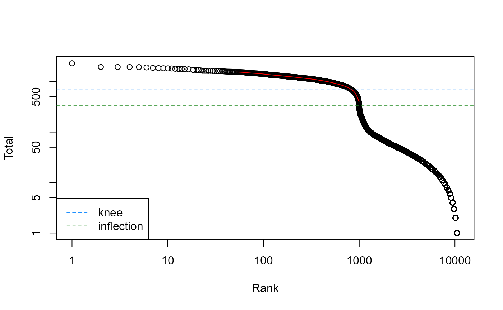
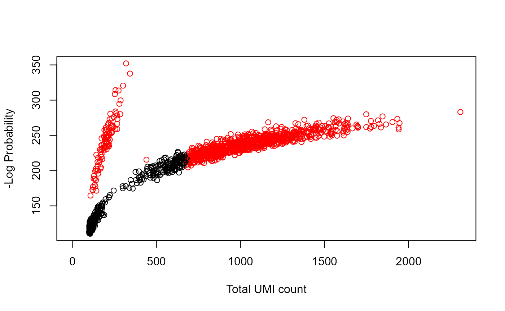
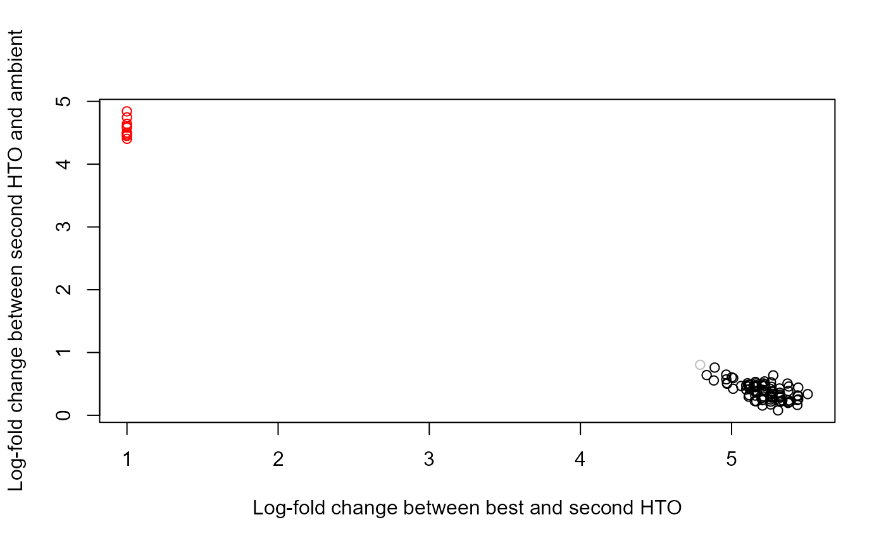

DropletUtils.RmdDroplet-based single-cell RNA sequencing (scRNA-seq) technologies allow researchers to obtain transcriptome-wide expression profiles for thousands of cells at once. Briefly, each cell is encapsulated in a droplet in a oil-water emulsion, along with a bead containing reverse transcription primers with a unique barcode sequence. After reverse transcription inside the droplet, each cell’s cDNA is labelled with that barcode (referred to a “cell barcode”). Bursting of the droplets yields a pool of cDNA for library preparation and sequencing. Debarcoding of the sequences can then be performed to obtain the expression profile for each cell.
This package implements some general utilities for handling these data after quantification of expression. In particular, we focus on the 10X Genomics platform, providing functions to load in the matrix of unique molecule identifier (UMI) counts as well as the raw molecule information. Functions are also available for downsampling the UMI count matrix or the raw reads; for distinguishing cells from empty droplets, based on the UMI counts; and to eliminate the effects of barcode swapping on Illumina 4000 sequencing machine.
The CellRanger pipeline from 10X Genomics will process the raw sequencing data and produce a matrix of UMI counts. Each row of this matrix corresponds to a gene, while each column corresponds to a cell barcode. This is saved in a single directory for each sample, usually named like <OUTPUT>/outs/filtered_gene_bc_matrices/<GENOME>1. We mock up an example directory below using some simulated data:
# To generate the files.
example(write10xCounts, echo=FALSE)
dir.name <- tmpdir
list.files(dir.name)## [1] "barcodes.tsv" "genes.tsv" "matrix.mtx"The matrix.mtx file contains the UMI counts, while the other two files contain the cell barcodes and the gene annotation. We can load this into memory using the read10xCounts function, which returns a SingleCellExperiment object containing all of the relevant information. This includes the barcode sequence for each cell (column), as well as the identifier and symbol for each gene (row).
sce <- read10xCounts(dir.name)
sce## class: SingleCellExperiment
## dim: 100 10
## metadata(1): Samples
## assays(1): counts
## rownames(100): ENSG00001 ENSG00002 ... ENSG000099 ENSG0000100
## rowData names(2): ID Symbol
## colnames: NULL
## colData names(2): Sample Barcode
## reducedDimNames(0):
## mainExpName: NULL
## altExpNames(0):The counts themselves are loaded as a sparse matrix, specifically a dgCMatrix from the Matrix package. This reduces memory usage by only storing the non-zero counts, which is useful for sparse scRNA-seq data with lots of dropouts.
class(counts(sce))## [1] "dgCMatrix"
## attr(,"package")
## [1] "Matrix"Users can also load multiple samples at once by supplying a character vector to read10xCounts. This will return a single SingleCellExperiment where all of the individual matrices are combined by column. Obviously, this only makes sense when the same set of genes is being used across samples.
CellRanger will also produce a molecule information file (molecule_info.h5) that contains… well, information about the transcript molecules. This includes the UMI sequence2, the cell barcode sequence, the gene to which it was assigned, and the number of reads covering the molecule. For demonstration purposes, we create an example molecule information file below:
## [1] "C:\\Users\\Zaza\\AppData\\Local\\Temp\\RtmpmkKmwA\\file6f481ba631d5"We can subsequently load this information into our R session using the read10xMolInfo function:
mol.info <- read10xMolInfo(mol.info.file)
mol.info## $data
## DataFrame with 9532 rows and 5 columns
## cell umi gem_group gene reads
## <character> <integer> <integer> <integer> <integer>
## 1 TGTT 80506 1 18 8
## 2 CAAT 722585 1 20 6
## 3 AGGG 233634 1 4 6
## 4 TCCC 516870 1 10 9
## 5 ATAG 887407 1 6 12
## ... ... ... ... ... ...
## 9528 TACT 1043995 1 9 12
## 9529 GCTG 907401 1 20 13
## 9530 ATTA 255710 1 13 10
## 9531 GCAC 672962 1 20 11
## 9532 TGAA 482852 1 1 6
##
## $genes
## [1] "ENSG1" "ENSG2" "ENSG3" "ENSG4" "ENSG5" "ENSG6" "ENSG7" "ENSG8"
## [9] "ENSG9" "ENSG10" "ENSG11" "ENSG12" "ENSG13" "ENSG14" "ENSG15" "ENSG16"
## [17] "ENSG17" "ENSG18" "ENSG19" "ENSG20"This information can be useful for quality control purposes, especially when the underlying read counts are required, e.g., to investigate sequencing saturation. Note that the function will automatically guess the length of the barcode sequence, as this is not formally defined in the molecule information file. For most experiments, the guess is correct, but users can force the function to use a known barcode length with the barcode.length argument.
Given multiple batches of very different sequencing depths, it can be beneficial to downsample the deepest batches to match the coverage of the shallowest batches. This avoids differences in technical noise that can drive clustering by batch. The scuttle package provides some utilities to downsample count matrices, but technically speaking, downsampling on the reads is more appropriate as it recapitulates the effect of differences in sequencing depth per cell. This can be achieved by applying the downsampleReads function to the molecule information file containing the read counts:
set.seed(100)
no.sampling <- downsampleReads(mol.info.file, prop=1)
sum(no.sampling)## [1] 9532
with.sampling <- downsampleReads(mol.info.file, prop=0.5)
sum(with.sampling)## [1] 9457The above code will downsample the reads to 50% of the original coverage across the experiment. However, the function will return a matrix of UMI counts, so the final total count may not actually decrease if the libraries are sequenced to to saturation! Users should use downsampleMatrix() instead if they want to guarantee similar total counts after downsampling.
A useful diagnostic for droplet-based data is the barcode rank plot, which shows the (log-)total UMI count for each barcode on the y-axis and the (log-)rank on the x-axis. This is effectively a transposed empirical cumulative density plot with log-transformed axes. It is useful as it allows users to examine the distribution of total counts across barcodes, focusing on those with the largest counts. To demonstrate, let us mock up a count matrix:
set.seed(0)
my.counts <- DropletUtils:::simCounts()We compute the statistics using the barcodeRanks function, and then create the plot as shown below.
br.out <- barcodeRanks(my.counts)
# Making a plot.
plot(br.out$rank, br.out$total, log="xy", xlab="Rank", ylab="Total")
o <- order(br.out$rank)
lines(br.out$rank[o], br.out$fitted[o], col="red")
abline(h=metadata(br.out)$knee, col="dodgerblue", lty=2)
abline(h=metadata(br.out)$inflection, col="forestgreen", lty=2)
legend("bottomleft", lty=2, col=c("dodgerblue", "forestgreen"),
legend=c("knee", "inflection"))
The knee and inflection points on the curve mark the transition between two components of the total count distribution. This is assumed to represent the difference between empty droplets with little RNA and cell-containing droplets with much more RNA, though a more rigorous method for distinguishing between these two possibilities is discussed below.
Empty droplets often contain RNA from the ambient solution, resulting in non-zero counts after debarcoding. The emptyDrops function is designed to distinguish between empty droplets and cells. It does so by testing each barcode’s expression profile for significant deviation from the ambient profile. Given a matrix my.counts containing UMI counts for all barcodes, we call:
set.seed(100)
e.out <- emptyDrops(my.counts)
e.out## DataFrame with 11100 rows and 5 columns
## Total LogProb PValue Limited FDR
## <integer> <numeric> <numeric> <logical> <numeric>
## 1 2 NA NA NA NA
## 2 9 NA NA NA NA
## 3 20 NA NA NA NA
## 4 20 NA NA NA NA
## 5 1 NA NA NA NA
## ... ... ... ... ... ...
## 11096 215 -246.428 9.999e-05 TRUE 0.00013799
## 11097 201 -250.234 9.999e-05 TRUE 0.00013799
## 11098 247 -275.905 9.999e-05 TRUE 0.00013799
## 11099 191 -228.763 9.999e-05 TRUE 0.00013799
## 11100 198 -233.043 9.999e-05 TRUE 0.00013799Droplets with significant deviations from the ambient profile are detected at a specified FDR threshold, e.g., with FDR below 1%. These can be considered to be cell-containing droplets, with a frequency of false positives (i.e., empty droplets) at the specified FDR. Furthermore, droplets with very large counts are automatically retained by setting their p-values to zero. This avoids discarding droplets containing cells that are very similar to the ambient profile.
is.cell <- e.out$FDR <= 0.01
sum(is.cell, na.rm=TRUE)## [1] 943The p-values are calculated by permutation testing, hence the need to set a seed. The Limited field indicates whether a lower p-value could be obtained by increasing the number of permutations. If there are any entries with FDR above the desired threshold and Limited==TRUE, it indicates that npts should be increased in the emptyDrops call.
table(Limited=e.out$Limited, Significant=is.cell)## Significant
## Limited FALSE TRUE
## FALSE 357 843
## TRUE 0 100We recommend making some diagnostic plots such as the total count against the negative log-probability. Droplets detected as cells should show up with large negative log-probabilities or very large total counts (based on the knee point reported by barcodeRanks). Note that the example below is based on simulated data and is quite exaggerated.
plot(e.out$Total, -e.out$LogProb, col=ifelse(is.cell, "red", "black"),
xlab="Total UMI count", ylab="-Log Probability")
Cell hashing experiments can be demultiplexed using the hashedDrops() function on the set of cell-containing barcode libraries. To demonstrate, we will mock up some hash tag oligo (HTO) counts for a population with cells from each of 10 samples. We will also add some doublets and empty droplets for some flavor:
set.seed(10000)
# Simulating empty droplets:
nbarcodes <- 1000
nhto <- 10
y <- matrix(rpois(nbarcodes*nhto, 20), nrow=nhto)
# Simulating cells:
ncells <- 100
true.sample <- sample(nhto, ncells, replace=TRUE)
y[cbind(true.sample, seq_len(ncells))] <- 1000
# Simulating doublets:
ndoub <- ncells/10
next.sample <- (true.sample[1:ndoub] + 1) %% nrow(y)
next.sample[next.sample==0] <- nrow(y)
y[cbind(next.sample, seq_len(ndoub))] <- 500Our first task is to identify the barcodes that actually contain cells. If we already did the calling with emptyDrops(), we could just re-use those calls; otherwise we can obtain calls directly from the HTO count matrix, though this requires some fiddling with lower= to match the sequencing depth of the HTO library.
hto.calls <- emptyDrops(y, lower=500)
has.cell <- hto.calls$FDR <= 0.001
summary(has.cell)## Mode TRUE NA's
## logical 100 900Each cell-containing barcode libary is simply assigned to the sample of origin based on its most abundant HTO. The confidence of the assignment is quantified by the log-fold change between the top and second-most abundant HTOs. The function will automatically adjust for differences in the ambient levels of each HTO based on the ambient profile; if this is not provided, it is roughly estimated the ambient profile from the supplied count matrix.
demux <- hashedDrops(y[,which(has.cell)],
ambient=metadata(hto.calls)$ambient)
demux## DataFrame with 100 rows and 7 columns
## Total Best Second LogFC LogFC2 Doublet Confident
## <numeric> <integer> <integer> <numeric> <numeric> <logical> <logical>
## 1 1657 4 5 0.999462 4.60496 TRUE FALSE
## 2 1635 8 9 0.999492 4.84165 TRUE FALSE
## 3 1669 6 7 0.999473 4.45073 TRUE FALSE
## 4 1674 6 7 0.999491 4.49983 TRUE FALSE
## 5 1645 3 4 1.000292 4.74602 TRUE FALSE
## ... ... ... ... ... ... ... ...
## 96 1167 3 1 5.31708 0.427468 FALSE TRUE
## 97 1158 3 1 5.26081 0.526363 FALSE TRUE
## 98 1179 4 9 5.00121 0.604380 FALSE TRUE
## 99 1187 2 5 5.37410 0.196833 FALSE TRUE
## 100 1177 5 8 5.15739 0.464633 FALSE TRUEIt is then a simple matter to determine the sample of origin for each cell. We provide Confident calls to indicate which cells are confident singlets, based on the whether they are (i) not doublets and (ii) do not have small log-fold changes between the top and second HTO. The definition of “small” is relative and can be changed with the nmad= argument.
table(demux$Best[demux$Confident])##
## 1 2 3 4 5 6 7 8 9 10
## 10 15 9 7 12 8 6 6 10 6We also identify doublets based on the log-fold change between the second HTO’s abundance and the ambient contamination. A large log-fold change indicates that the second HTO exceeds that from contamination, consistent with the presence of a doublet.
colors <- ifelse(demux$Confident, "black",
ifelse(demux$Doublet, "red", "grey"))
plot(demux$LogFC, demux$LogFC2, col=colors,
xlab="Log-fold change between best and second HTO",
ylab="Log-fold change between second HTO and ambient")
Barcode swapping is a phenomenon that occurs upon multiplexing samples on the Illumina 4000 sequencer. Molecules from one sample are incorrectly labelled with sample barcodes from another sample, resulting in their misassignment upon demultiplexing. Fortunately, droplet experiments provide a unique opportunity to eliminate this effect, by assuming that it is effectively impossible to generate multiple molecules with the same combination of cell barcode, assigned gene and UMI sequence. Thus, any molecules with the same combination across multiple samples are likely to arise from barcode swapping.
The swappedDrops function will identify overlapping combinations in the molecule information files of all multiplexed 10X samples sequenced on the same run. It will remove these combinations and return “cleaned” UMI count matrices for all samples to use in downstream analyses. To demonstrate, we mock up a set of molecule information files for three multiplexed 10X samples:
set.seed(1000)
mult.mol.info <- DropletUtils:::simSwappedMolInfo(tempfile(), nsamples=3)
mult.mol.info## [1] "C:\\Users\\Zaza\\AppData\\Local\\Temp\\RtmpmkKmwA\\file6f48a7f6abe.1.h5"
## [2] "C:\\Users\\Zaza\\AppData\\Local\\Temp\\RtmpmkKmwA\\file6f48a7f6abe.2.h5"
## [3] "C:\\Users\\Zaza\\AppData\\Local\\Temp\\RtmpmkKmwA\\file6f48a7f6abe.3.h5"We then apply swappedDrops to these files to remove the effect of swapping in our count matrices.
s.out <- swappedDrops(mult.mol.info, min.frac=0.9)
length(s.out$cleaned)## [1] 3
class(s.out$cleaned[[1]])## [1] "dgCMatrix"
## attr(,"package")
## [1] "Matrix"For combinations where 90% of the reads belong to a single sample, the molecule is assigned to that sample rather than being removed. This assumes that swapping is relatively rare, so that the read count should be highest in the sample of origin. The exact percentage can be tuned by altering min.frac in the swappedDrops call.
On occasion, chimeric molecules are generated during library preparation where incomplete PCR products from one cDNA molecule hybridise to another molecule for extension using shared sequences like the poly-A tail for 3’ protocols. This produces an amplicon where the UMI and cell barcode originate from one transcript molecule but the gene sequence is from another, equivalent to swapping of reads between genes. We handle this effect by removing all molecules in the same cell with the same UMI sequence using the chimericDrops() function. This is applied below to a molecule information file to obtain a single cleaned count matrix for the relevant sample.
out <- chimericDrops(mult.mol.info[1])
class(out)## [1] "list"Of course, this may also remove non-chimeric molecules that have the same UMI by chance, but for typical UMI lengths (10-12 bp for 10X protocols) we expect UMI collisions to be very rare between molecules from the same cell. Nonetheless, to mitigate losses due to collisions, we retain any molecule that has a much greater number of reads compared to all other molecules with the same UMI in the same cell.
## R version 4.1.0 (2021-05-18)
## Platform: x86_64-w64-mingw32/x64 (64-bit)
## Running under: Windows 10 x64 (build 21390)
##
## Matrix products: default
##
## locale:
## [1] LC_COLLATE=English_United States.1252
## [2] LC_CTYPE=English_United States.1252
## [3] LC_MONETARY=English_United States.1252
## [4] LC_NUMERIC=C
## [5] LC_TIME=English_United States.1252
## system code page: 936
##
## attached base packages:
## [1] parallel stats4 stats graphics grDevices utils datasets
## [8] methods base
##
## other attached packages:
## [1] Matrix_1.3-4 DropletUtils_1.13.2
## [3] SingleCellExperiment_1.14.1 SummarizedExperiment_1.22.0
## [5] Biobase_2.52.0 GenomicRanges_1.44.0
## [7] GenomeInfoDb_1.28.1 IRanges_2.26.0
## [9] S4Vectors_0.30.0 BiocGenerics_0.38.0
## [11] MatrixGenerics_1.4.0 matrixStats_0.59.0
## [13] knitr_1.33 BiocStyle_2.20.2
##
## loaded via a namespace (and not attached):
## [1] Rcpp_1.0.6 locfit_1.5-9.4
## [3] lattice_0.20-44 rprojroot_2.0.2
## [5] digest_0.6.27 R6_2.5.0
## [7] evaluate_0.14 highr_0.9
## [9] sparseMatrixStats_1.4.0 zlibbioc_1.38.0
## [11] rlang_0.4.11 jquerylib_0.1.4
## [13] R.utils_2.10.1 R.oo_1.24.0
## [15] rmarkdown_2.9 pkgdown_1.6.1
## [17] textshaping_0.3.5 desc_1.3.0
## [19] BiocParallel_1.26.1 stringr_1.4.0
## [21] RCurl_1.98-1.3 beachmat_2.8.0
## [23] DelayedArray_0.18.0 HDF5Array_1.20.0
## [25] compiler_4.1.0 xfun_0.24
## [27] systemfonts_1.0.2 htmltools_0.5.1.1
## [29] GenomeInfoDbData_1.2.6 bookdown_0.22
## [31] edgeR_3.34.0 crayon_1.4.1
## [33] rhdf5filters_1.4.0 bitops_1.0-7
## [35] R.methodsS3_1.8.1 grid_4.1.0
## [37] jsonlite_1.7.2 magrittr_2.0.1
## [39] dqrng_0.3.0 stringi_1.6.2
## [41] cachem_1.0.5 scuttle_1.2.0
## [43] XVector_0.32.0 fs_1.5.0
## [45] limma_3.48.1 bslib_0.2.5.1
## [47] DelayedMatrixStats_1.14.0 ragg_1.1.3
## [49] Rhdf5lib_1.14.2 tools_4.1.0
## [51] fastmap_1.1.0 yaml_2.2.1
## [53] rhdf5_2.36.0 BiocManager_1.30.16
## [55] memoise_2.0.0 sass_0.4.0If you use the “filtered” matrix, each column corresponds to a putative cell. If you use the “raw” matrix, all barcodes are loaded, and no distinction is made between cells and empty droplets.↩︎
For readers who are unfamiliar with UMIs, they allow reads from different PCR amplicons to be unambiguously assigned to the same original molecule.↩︎